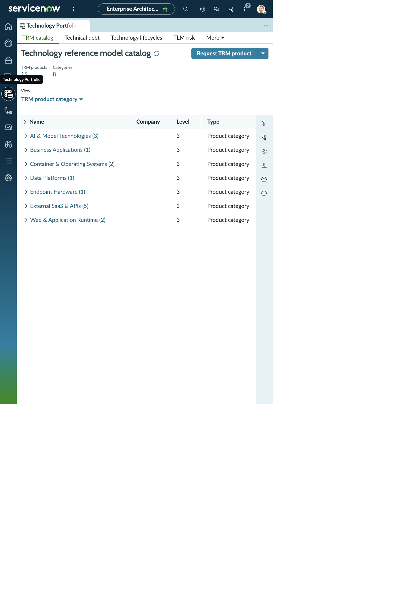
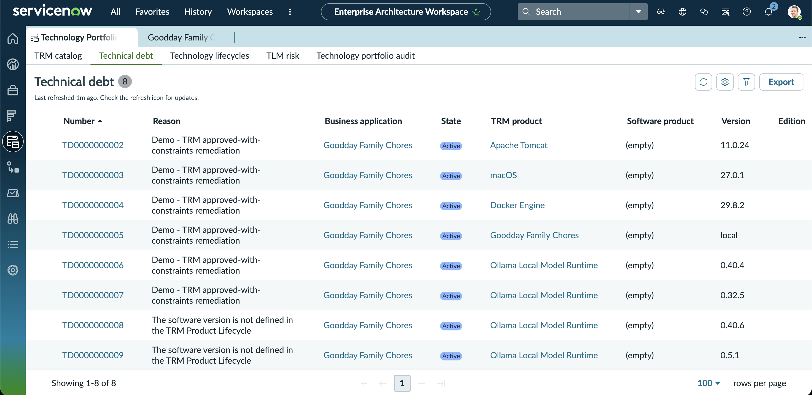

ENTERPRISE ARCHITECTURE WORKSPACE · TECHNOLOGY PORTFOLIO
Technology standard & lifecycle risk
Two related records show how the technology portfolio captures a product standard and an application-service lifecycle risk. Blank lifecycle fields stay visible as blanks.
TECHNOLOGY STANDARD PRODUCT
Qwen3.5 4B
- Name
- Qwen3.5 4B
- Company
- Alibaba Cloud
- Type
- Software
- Category
- Artificial Intelligence & Model Technologies
- Owner
- Riley Park
- Technology Reference Model phase
- Approved with Constraints
- Investment direction
- Maintain
- Other categories
- (empty)
- Business justification
- Local text/vision model product exposed to Goodday as qwen3.5:4b. Official model metadata identifies a 4B-parameter multimodal model under Apache 2.0. Approved with constraints: local-only inference for sensitive household context, minimal prompts, adult review, and accurate distinction between an installed model tag and an actively loaded model.
Why this product is in the portfolio: the Technology Reference Model record is a product-level standard. The linked lifecycle row records the installed model tag and applies the same “Approved with Constraints” phase.
| Version | Edition | Hardware model | Technology reference phase | Phase start | Phase end | Description |
|---|---|---|---|---|---|---|
| qwen3.5:4b | (empty) | (empty) | Approved with Constraints | 2026-10-18 | (empty) | Goodday Ollama model tag is qwen3.5:4b. The official Qwen3.5-4B model card lists a 4B multimodal model and Apache-2.0 license. Keep sensitive household context local and retain adult review of output. Source: Qwen/Qwen3.5-4B model card. |
WORKSPACE VISUALS
Technology Portfolio catalog
See the working view in context. The record details above remain available here as readable HTML.

TECHNOLOGY LIFECYCLE RISK RECORD
Goodday Household Web - Production
- Fiscal period
- Technology Lifecycle Management Demo 2026-10
- Risk score
- 100
- Table name
- Service · cmdb_ci_service
- Technology
- Service: Goodday Household Web - Production
- Product version
- (empty)
- Product edition
- (empty)
- Record created
- 2026-10-19 02:08:51
- Related service
- Goodday Household Web - Production
| Entity level | Technology | Risk score | Product version | Product edition |
|---|---|---|---|---|
| Business application | Goodday Family Chores | 400 | (empty) | (empty) |
| Application service | Goodday Household Web - Production | 100 | (empty) | (empty) |
| Application service | Goodday Recovery Access - Production | 100 | (empty) | (empty) |
| Application service | Goodday Local Artificial Intelligence Inference Data Service - Production | 100 | (empty) | (empty) |
| Application service | Goodday Local Artificial Intelligence Inference - Production | 100 | (empty) | (empty) |
| Hardware model | Apple MacBook Pro (Mac15,6) | 100 | (empty) | (empty) |
Interpretation: the application-level row is 400 while this service-level row is 100. The snapshot does not include lifecycle milestone fields on these risk rows, so retain the score as the recorded value and inspect the linked lifecycle/discovered-technology records before using it as a decision.
WORKSPACE VISUALS
technical debt
See the working view in context. The record details above remain available here as readable HTML.
